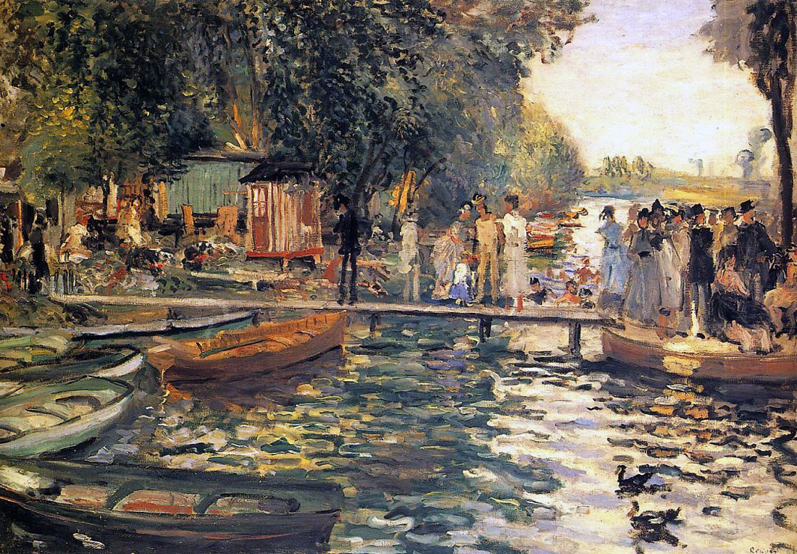
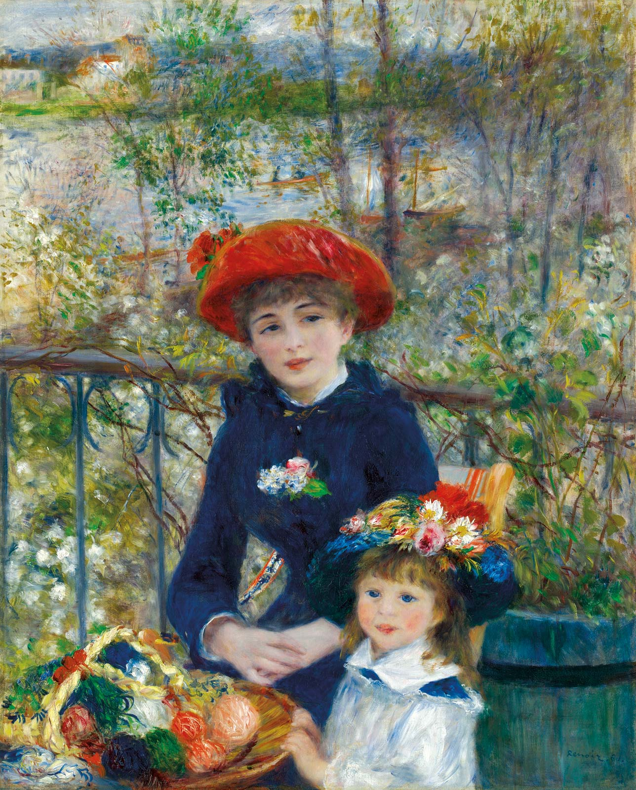
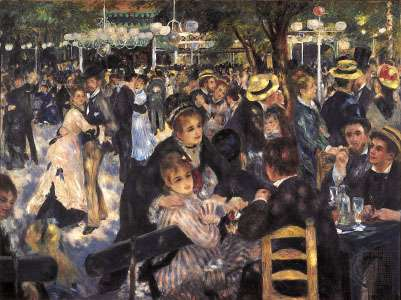
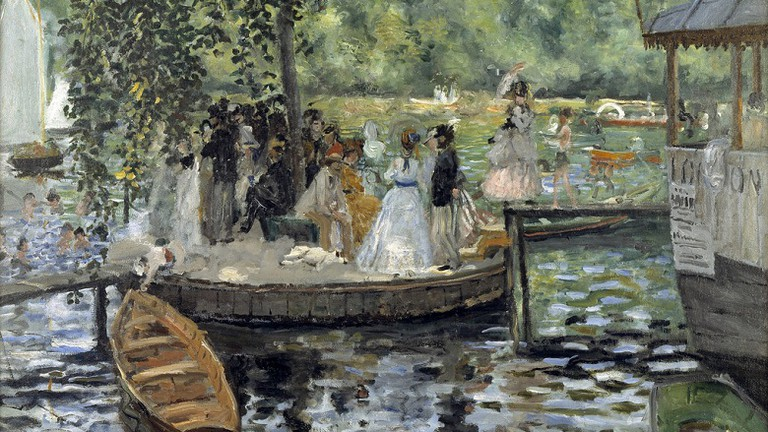

| Born | 25 February 1841 Limoges, France |
| Died | 3 December 1919 (aged 78) Cagnes-sur-Mer, France |
| Nationality | French |
| Known for | Painting |
| Movement | Impressionism |
Pierre-Auguste Renoir, commonly known as Auguste Renoir; 25 February 1841 – 3 December 1919), was a French artist who was a leading painter in the development of the Impressionist style. As a celebrator of beauty and especially feminine sensuality, it has been said that "Renoir is the final representative of a tradition which runs directly from Rubens to Watteau."
 Renoir's paintings are notable for their vibrant light and saturated color, most often focusing on people in intimate and candid compositions.One of the best known Impressionist works is Renoir's 1876 Dance at Le Moulin de la Galette (Bal du moulin de la Galette). The painting depicts an open-air scene, crowded with people at a popular dance garden on the Butte Montmartre close to where he lived. The works of his early maturity were typically Impressionist snapshots of real life, full of sparkling color and light.
 